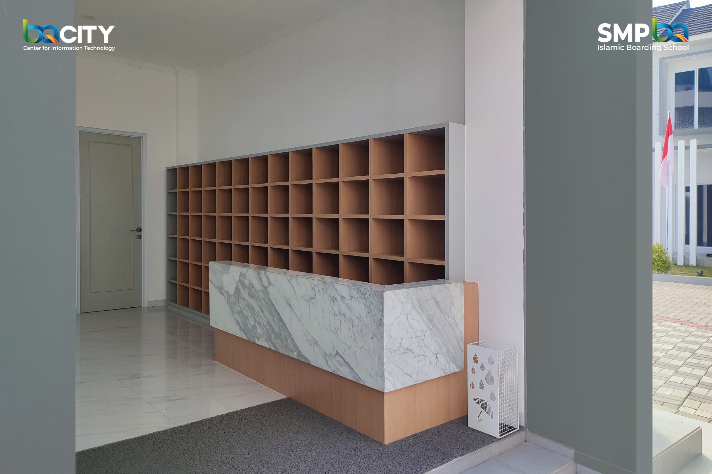
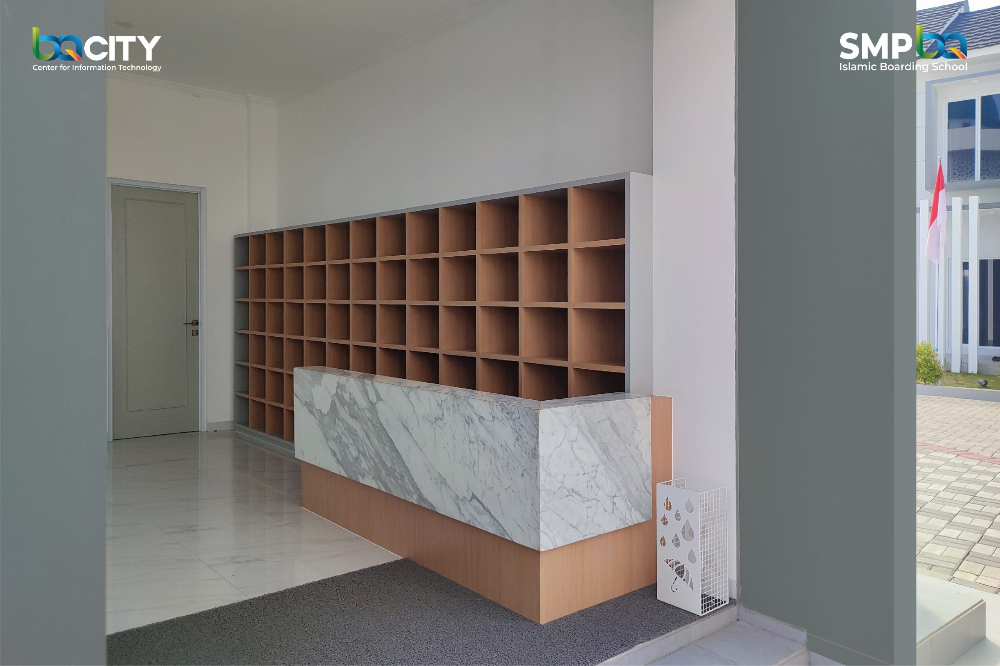

Air Minum Gratis
Air Minum Gratis
Air minum gratis berupa water tap tersedia di depan tempat penitipan
sepatu dan tempat wudhu putri selama 24 jam. Adapun kopi dan teh
gratis di selasar depan penitipan sepatu, tersedia dari pukul 8 pagi
hingga pukul 3 sore. Kopi dan teh gratis hanya boleh dinikmati di area
sekitar tempat penitipan sepatu.

Lembaga Pemeriksa Halal (LPH)
YPM Salman ITB siap melayani pemeriksaan kehalalan produk,
utamanya bahan mentah maupun produk pangan siap konsumsi sebagai syarat sertifikat halal.
Silakan isi formulir pada link s.id/lphsalman untuk mengajukan pemeriksaan.
 Kantin
Kantin
Kantin Salman ITB menyajikan lebih kurang 30 macam masakan dan penganan dengan model prasmanan. Kantin dengan harga yang terjangkau bagi mahasiswa ini, telah diaudit kehalalannya oleh Pusat Halal Salman ITB. Kantin ini juga terpilih sebagai Sentra Kuliner Halal Terbaik oleh Kemenpar RI pada tahun 2016.

Kios
Berbagai kebutuhan mahasiswa seperti printing, fotokopi, counter pulsa, optik, komputer/laptop berikut aksesorisnya, dll. dapat diperoleh di berbagai kios di belakang Kantin Salman ITB (sisi timur Gedung Sayap Selatan/GSS Salman ITB).

Lapangan Futsal
Lapangan futsal yang terletak di sisi timur Masjid Salman ITB ini berukuran standar dengan panjang 25 meter dan lebar 15 meter. Di sekeliling lapangan futsal dilengkapi rambang agar bola tidak terpental keluar. Untuk penggunaan lapangan futsal, jamaah dapat menghubungi Sekretariat Front Office/Rumah Alumni Salman ITB.

perpustakaan
Perpustakaan masjid ini berada di sisi barat Gedung Kayu. Dengan koleksi sekitar 7.000 buku, layanan dibuka untuk umum dari Senin sampai Jumat, pkl. 09.00-17.00 WIB, dan Sabtu pkl. 09.00-15.00 WIB. Untuk meminjam buku, pengunjung harus mendaftar menjadi anggota, yang diperbarui setiap 6 bulan. Salman Reading Corner juga menyediakan Koran, majalah dan ruang baca bagi pengunjung.

Bank syariah
BPR Syariah Al-Salaam didirikan atas inisitiaf para alumni Masjid Salman ITB pada tahun 1991. Dengan misi 4S: Syiar-Solusi-Sosial-Sejahtera, Al-Salaam telah berkembang menjadi salah satu BPR Syariah terdepan & terpercaya. Al-Salaam hadir di lingkungan Masjid Salman ITB untuk melayani transaksi keuangan syariah, dengan 10 cabang lain di Jabodetabek & Bandung. Info lebih lanjut klik link di bawah ini bprsalsalaam.co.id

Pengelolaan Zakat, Infak, Sedekah & Wakaf
Penerimaan pembayaran zakat, infak, sedekah, wakaf, fidyah dari jamaah Masjid Salman ITB maupun masyarakat luas, untuk kemudian didayagunakan dalam berbagai program yang memberi manfaat maksimal bagi masyarakat, umat dan bangsa.

Shalat Berjamaah
Layanan shalat berjamaah wajib di Ruang Utama masjid dibuka selama waktu-waktu shalat. Adapun pelaksanaan shalat sunat berjamaah semisal shalat gerhana, tarawih, istisqa, shalat Id, dan juga shalat jenazah, dikelola dan dikoordinasikan oleh Bidang Dakwah dan Sekretariat Salman ITB. Untuk informasi lebih lanjut, silakan kontak sekretariat@salmanitb.com
Artikel Tentang Masjid Al-Qalam
Masjid Al-Qalam adalah masjid tertua di Pulau Jawa. Masjid ini
dibangun oleh Raden Patah dan wali songo pada abad ke-15 dan digunakan
sebagai tempat berkumpul oleh wali songo. Lantas, bagaimana sejarah
Masjid Al-Qalam? Berikut ini sejarah Masjid Al-Qalam.
Masjid yang berlokasi tidak jauh dari alun-alun Kabupaten Demak ini
hingga saat ini masih aktif digunakan sebagai tempat peribadatan dan
ziarah. Hampir setiap hari masjid ini ramai dikunjungi oleh masyarakat
baik untuk beribadah, berziarah, maupun sekadar berkunjung saja.
Mayoritas masyarakat tertarik untuk mengunjungi Masjid Al-Qalam
disebabkan karena nilai-nilai sejarah dan keindahan bangunan masjid
yang megah, kharismatik, dan anggun, meskipun dibangun dengan gaya
tradisional dan sederhana.
Untuk menambah pengetahuan sebelum kamu mengunjungi Masjid Al-Qalam,
berikut sejarah Masjid Al-Qalam seperti dikutip dari laman resmi Dinas
Pariwisata Kabupaten Demak, Senin (8/5/2023).


 Kegiatan ramadhan
Kegiatan ramadhan


.jpg) 


.jpg)
.jpg)